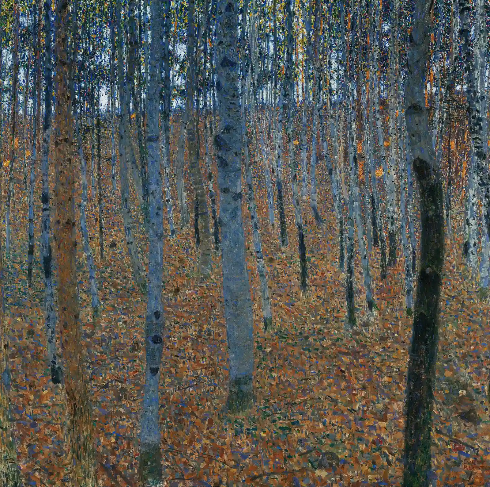
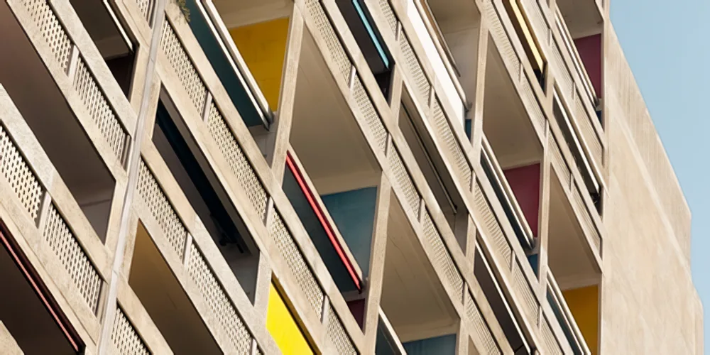
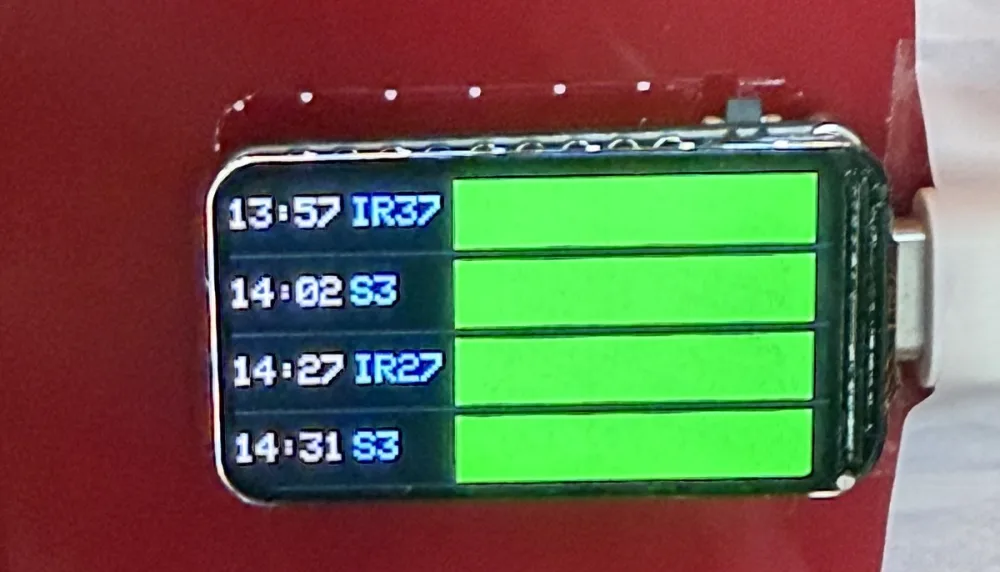
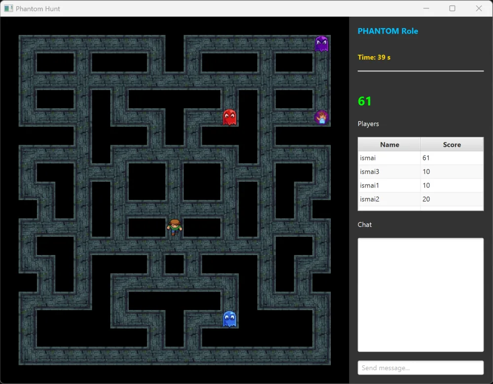

Hermès Reisner
Computer science in Basel. Curiosity in many directions.
Explore the workUseful things.
Room for the unexpected.
I build tools for images, music, machines, and the occasional everyday problem. Some begin in a university course; others begin with something I want to understand a little better.
01 / A selection of projects
Work & explorations
Last reviewed
-

A real LocalSR output. Photograph by Tim Ziegelbaum. About the image. LocalSR
Give a photograph more room. A desktop application for image enlargement, denoising, and deblurring, with models that run on your own computer.
Tauri / Svelte / Python / PyTorch
Alpha software. Image comparison, platform details, and release notes in the showcase.
-
Basel-Stadt, Switzerland
Nature,
in the details.Inventory changes / Maps & queries
A study of change in the canton's nature inventory. Nature Inventory Delta
What changes between two versions of a nature inventory? A local interface for exploring Basel-Stadt's data through maps, charts, and optional language-model queries.
Python / FastAPI / Streamlit / SQLite
Requires a prepared inventory database, which is not included in the repository.
-
train-tui
A small terminal dashboard for a long training run. Pure C, with profiles for BasicSR, Lightning, and HuggingFace, plus AMD and NVIDIA GPU telemetry.
C / Linux sysfs / ANSI / nvidia-smi
train-tui / telemetry specimenGPU0 AMD Radeon RX 7900 XTXstate running (ddp)vram 21,840 MiB / 24,564 MiBtemp 63 °C / pwr 382 Wloss 1.428 ──█▓▒░───░▒▓█───█▓▒░── step 11,480 / 12,000throughput 4,812 tok/seta 00:08:42Browser specimen with invented numbers, not a live training run. -
A piano, continued
A GPT-2-style model trained on a 12k MIDI dataset with Apple Silicon. Give it a short piano phrase and compare the continuations from different checkpoints.
PyTorch / MPS / Miditok REMI / MIDI
A small study in D minor
This browser nocturne is written by hand rather than by the model. Generated samples are in the project showcase. -

The actual departure display, photographed for the project. The next train from Sissach
A departure board for the desk. An ESP32 and a small color display bring Swiss transport data into the room, with configurable filters and watchdog recovery.
C++ / ESP32 / ST7789 / OpenData API
Display specimen
SBB CFF FFS Sissach14:24:08S3Basel SBB14:28+0′Gl. 2S9Olten14:32+1′Gl. 1IC61Interlaken Ost14:41+0′Gl. 3A browser reconstruction of the panel, not a photograph of it. Sample departures; the clock uses your device's time. -

PhantomHunt by the CS108 ProgrammierLoewen team. PhantomHunt
An asymmetric, three-versus-one Java game made at the University of Basel. My work focused on networking, lobbies, game-state synchronization, and scoring.
Java 25 / JavaFX / TCP / JUnit / JaCoCo
-
Small paths, better routes
An ant-colony visualizer for the traveling salesperson problem. Adjust the parameters, watch tours develop, and experiment with random cities or New York landmarks.
Java 21 / Swing / Maven / JavaScript demo
-
A little less bookkeeping
A guided entry flow for a recurring bookkeeping task. Configurable choices turn repeated typing into structured records sent to Google Sheets.
Python / Flask / Google Sheets API / OAuth
-
A remote, made of Telegram
Send a YouTube link from your phone and play it on a chosen monitor. Browser playback and a persistent queue, with setup for Linux, Windows, and macOS.
Python / Telegram / Browser automation
-
Before PhantomHunt
The browser study that came before the team game. A small playable maze for experimenting with pursuit, movement, and pathfinding ideas.
JavaScript / Canvas / A* / Breadth-first search
Personal tools, university work, and experiments still finding their shape.
All repositories
02 / A little about me
A technical mind.
A curious eye.
I'm a computer science student at the University of Basel, based in Sissach. Before that, I spent a year studying mechanical engineering at ETH Zürich.
I'm interested in how software meets the physical world: a model turning pixels into an image, a tiny display waiting for a train, or a few lines in a terminal making a machine easier to understand.
Curriculum vitae (PDF)LinkedIn
What I work with
- Systems
- C, C++, Linux, terminal interfaces
- Machine learning
- Python, PyTorch, image & music models
- Embedded
- ESP32, displays, sensors & APIs
- Applications
- Java, JavaFX, Svelte, Tauri
03 / Get in touch
Something in mind?
Let's talk.
For a project, a research idea, or a conversation about something you're building, the easiest way to reach me is by email.
hermesnathanheiniger@gmail.com